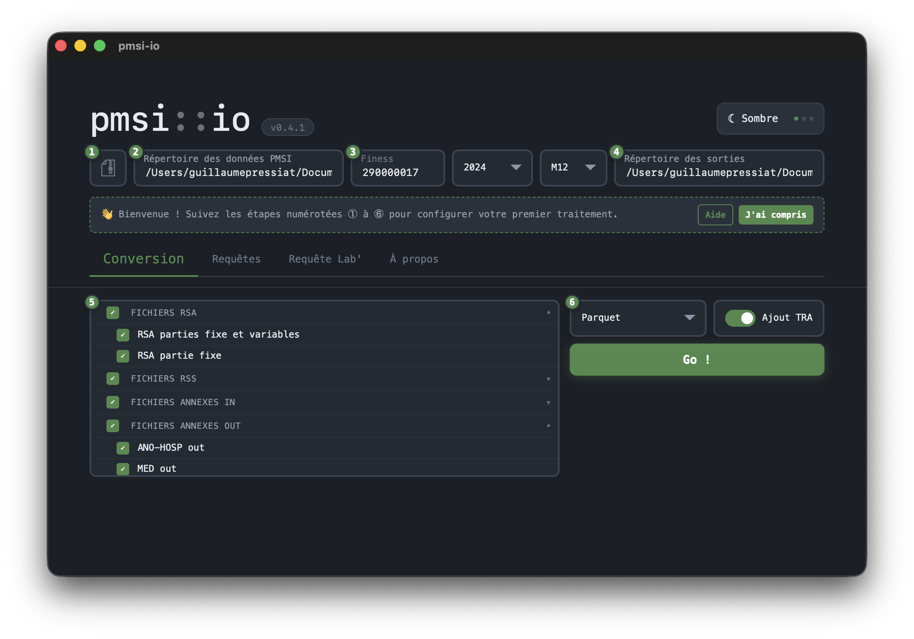
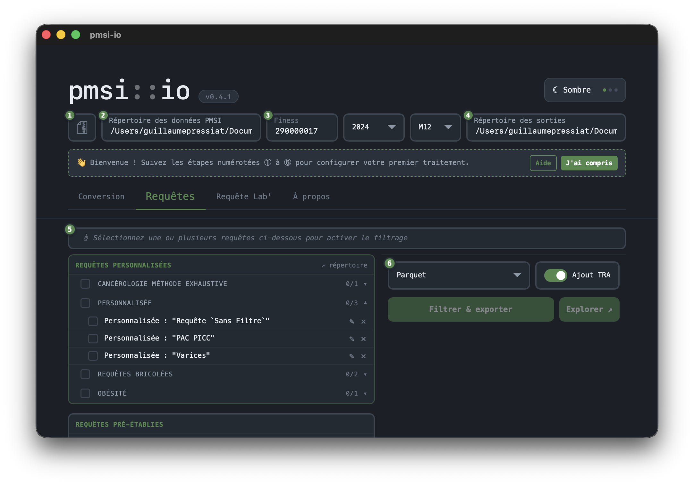
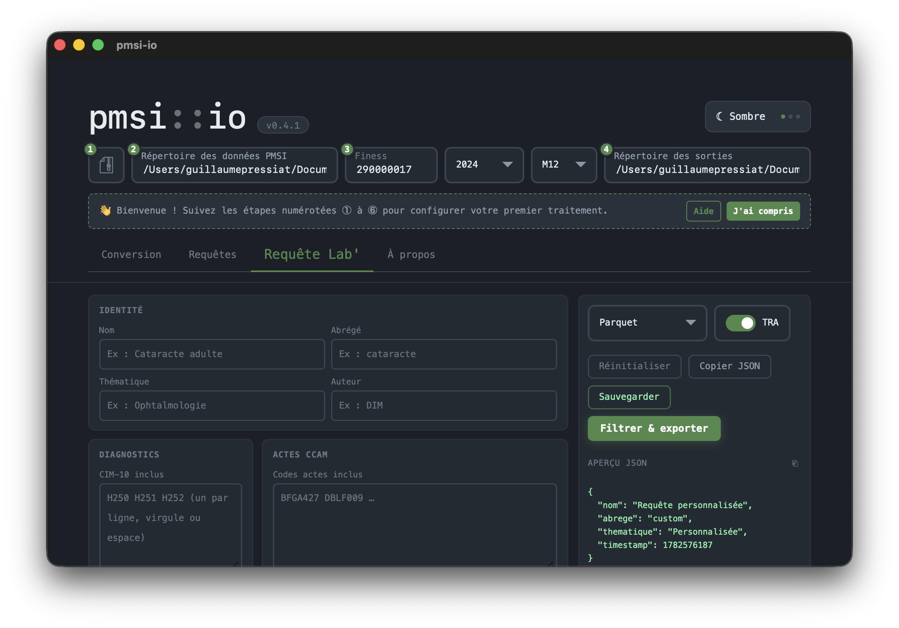
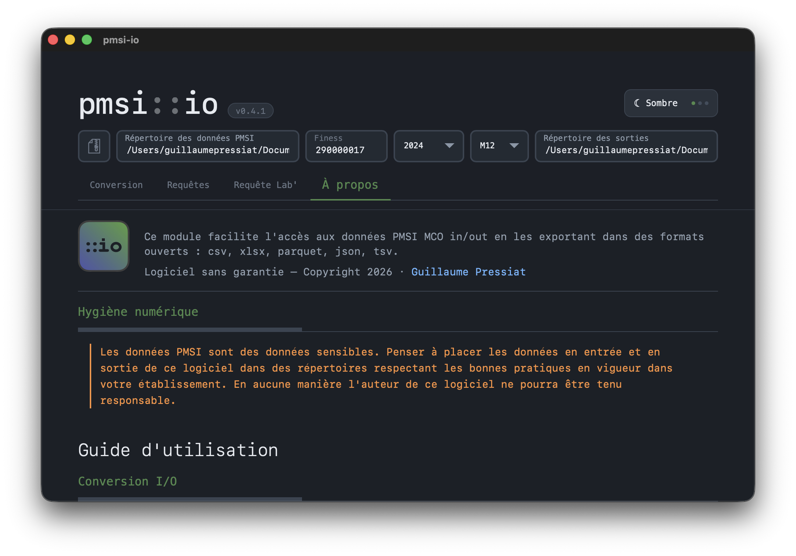
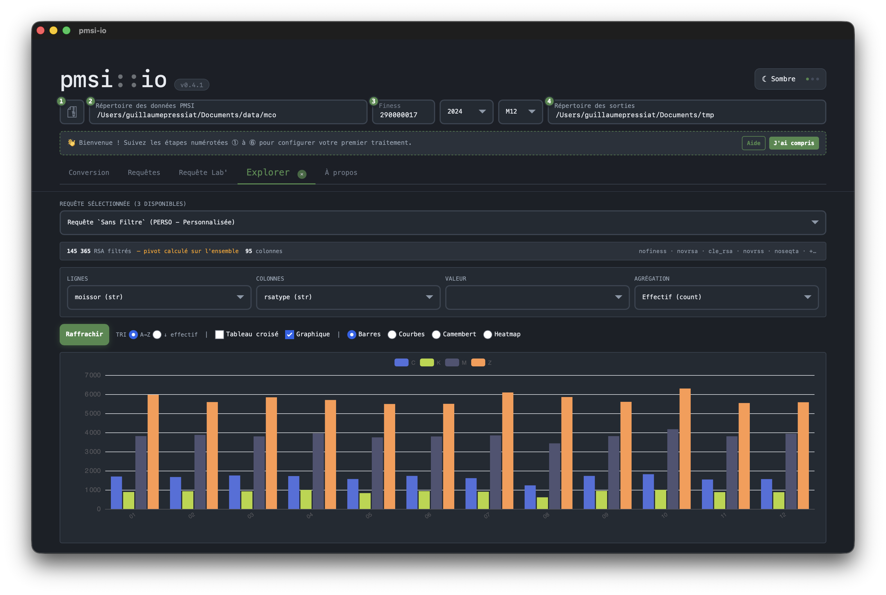
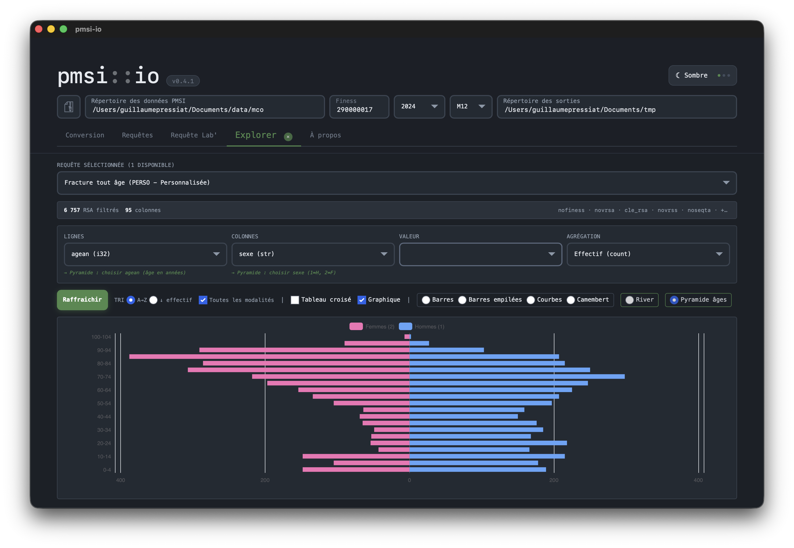

01
Conversion
Sélectionnez les fichiers PMSI à exporter, choisissez le format (csv, xlsx, parquet…) et lancez la conversion en un clic.

02
Requêtes
Exécutez des requêtes pré-établies ou personnalisées sur vos RSA, filtrez par thématique et exportez les résultats.

03
Requête Lab'
Construisez vos propres requêtes (GHM, diagnostics, actes CCAM, âge, poids…), sauvegardez-les et partagez-les en JSON.

04
À propos & aide
Documentation intégrée : hygiène numérique, prise en main pas à pas, requêtes avancées.

05
Explorer
Pour une liste de requêtes, explorez visuellement vos données (pivot table et graphiques)

06
Pyramide
Pour une liste de requêtes, obtenez la pyramide des âges

07
Explorer (2)
Pour une liste de requêtes, explorez visuellement vos données (pivot table et graphiques)